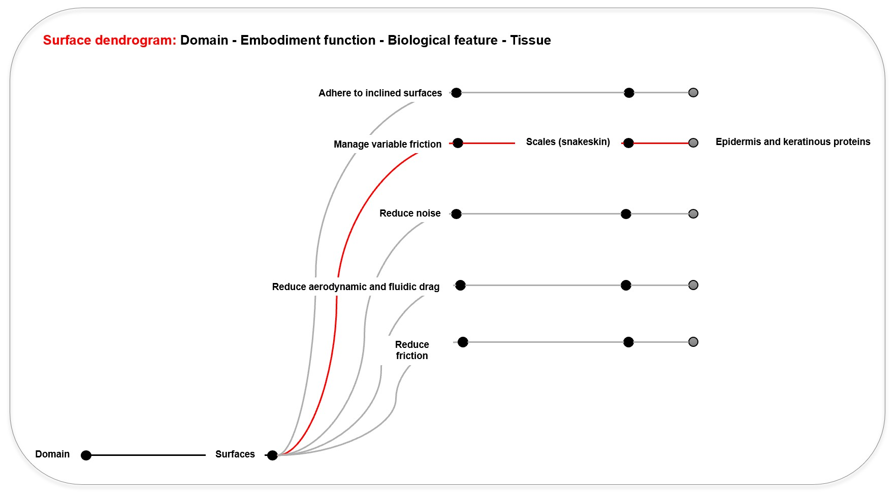
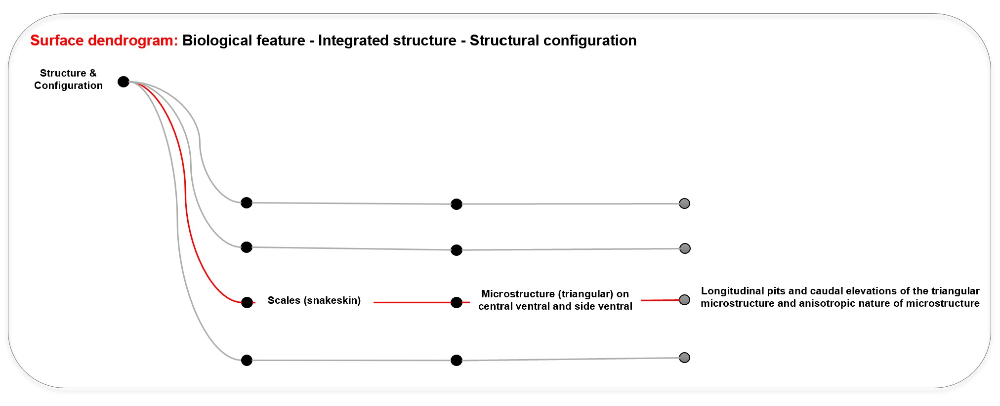
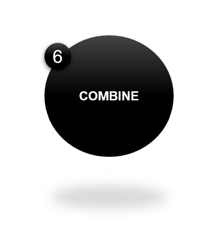

EXAMPLE WALKTHROUGH
Non-pneumatic tyres: Space / Extreme-weather robots
Design a multifunctional non-pneumatic tyre for space or extreme-weather robots that: "manages variable friction" and "resists impact"
Step 1: Choosing relevant Domains
The initial selection of domains for integration is driven by two key factors: the designer's specific intention for the concept and the overarching requirements of the design problem at hand.
Step 2: Explore domain dendrograms
Surfaces Domain
-
To match the function manage variable friction with a biological feature, snakeskin texture can be selected.
Its performance arises from an integrated structural design comprising triangular microstructured scales and a distinct
structural configuration that includes longitudinal pits, caudal elevation, and directional anisotropy of the microstructures


Cellular structures Domain
-
To match the function resist impact with a biological feature, the woodpecker beak can be selected.
Its performance is enabled by an integrated structure consisting of a trabecular foam core sandwiched between hard outer shells,
combined with a graded structural configuration featuring variable porosities: outer (30%), middle (65%), and inner (30%).


Step 3: Select features using meta-level design parameters
Multiple biological features can realise the same embodiment function. In this example, both the woodpecker beak and the pomelo peel exhibit impact resistance and belong to the Cellular Structures domain. When features share both domain and function, selection is guided using meta-level design parameters.
For the Cellular Structures domain, interaction area and porosity are used as the primary selection parameters. Based on these criteria, the woodpecker beak is selected due to its high interaction area and low porosity at the contact interface, making it more suitable for impact-resistant applications.

For cellular structures, the woodpecker beak is selected due to its high interaction area and low porosity at the contact interface.

Step 4: Combine
A morphology matrix is used to systematically combine the selected features across Domains. The matrix enables the exploration of multiple design configurations by integrating different morphological features. The following example illustrate feature combinations generated using the morphology matrix:
| Function | Surfaces | Cellular structures | Shapes | Cross-sections |
|---|---|---|---|---|
| Manage variable friction | Snakeskin | -- | Dummy organism | -- |
| Resist impact | -- | woodpecker's beak | -- | -- |
Concept 1: Snakeskin (Surfaces domain) + Woodpecker's beak (Cellular structures domain)
Concept 2: Dummy shape (Shapes domain) + Woodpecker's beak (Cellular structures domain)
Example Output: Non-pneumatic Multifunctional Bio-inspired Tyre

The resulting concept is a multifunctional non-pneumatic tyre design. The concept integrates snakeskin-inspired surface features for friction management with a woodpecker-beak-inspired internal cellular structure for impact resistance. This configuration is intended for operation in high-roughness and uneven terrain environments.
APPLICATIONS

The effectiveness of MBID is demonstrated through the generation of multifunctional bio-inspired structural concepts across diverse application domains. These include painless sutures for medical applications created by integrating porcupine quill barbs with the rotational parabolic cross-section of a kingfisher beak; marine skins developed by combining honeycomb cellular structures with sharkskin-inspired surface features; heat-absorption and low-pressure drop structures for aerospace applications generated through the integration of camel nostril-inspired cross-sections and Namib desert beetle–inspired surface micro-bumps; and protective helmets for sports applications designed through the integration of a penguin-inspired spindle shape, luffa sponge cellular structures, and corrugated conical forms inspired by Balanus.
DETAILED DESCRIPTIONS, DESIGN LOGIC, AND VALIDATION OF THESE CONCEPTS ARE PROVIDED IN THE ASSOCIATED PUBLICATIONS.
1. Velivela, P.T., Letov, N., Liu, Y. and Zhao, Y.F., 2021. Application of domain integrated design methodology for bio-inspired design-a case study of suture pin design. Proceedings of the Design Society, 1, pp.487-496. DOI: 10.1017/pds.2021.49
2. Velivela, P.T., Ridard, A. and Zhao, Y.F., 2024. Parameters for selecting biological features in multifunctional bio-inspired design: a convergent evolution approach. Bioinspiration & Biomimetics. DOI: 10.1088/1748-3190/ad3ed3
3. Sarabhai S, Velivela PT, Zhao YF, Sanchez F, Kibsey M. Comparative Study of the Flow and Thermal Characteristics of Non-Stochastic Lattice and Bio-Inspired Multi-Scale Structures for Gas Turbine Engine Applications. InTurbo Expo: Power for Land, Sea, and Air 2023 Jun 26 (Vol. 87066, p. V11BT23A011). American Society of Mechanical Engineers. DOI: https://doi.org/10.1115/GT2023-103790
4. Velivela, P.T., Letov, N. and Zhao, Y.F., 2025. Meta-level design parameters for bio-inspired impact resistance: a case study in helmet design. Proceedings of the Design Society, 5, pp.2381-2390. DOI: https://doi.org/10.1017/pds.2025.10252
5. Velivela, P.T., Letov, N., Kong, L. and Zhao, Y.F., 2023. A Case Study of Multifunctional Non-Pneumatic Tire Design For The Validation of Meta-Level Design Parameter In Domain Integrated Design (DID) Method. Proceedings of the Design Society, 3, pp.39-48. DOI: 10.1017/pds.2023.52


Copyright © 2026 ADML McGILL University. All rights reserved.